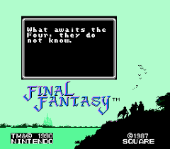

Walkthrough
This walkthrough intends to create the be all end all guide for completing the original Final Fantasy most optimally.
This walkthrough intends to create the be all end all guide for completing the original Final Fantasy most optimally.